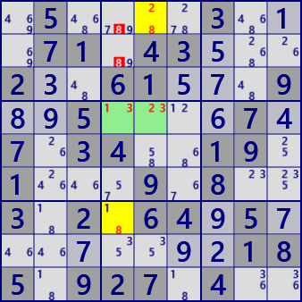
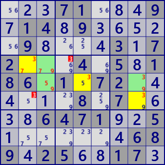

XY Chain
XY-Chain is an analysis algorithm using Locked which occurs in the concatenation of bivalues. The following figure shows the image of XY-Chain. Begin with bivalue's cell with a focused number a and concatenate bivalue cells. In the image diagram, they are connected with different numbers, but the same number may appear. It is assumed that a cell at the tip of a chain has the same number a as the starting cell. Candidate number a can be excluded in the cell related to the starting cell / leading cell.

XY-Chain example. Two series are overlapped in the right figure.
 .5....3...71.43...2..61...9..5....7.7.34..19.1...9.8..3.2.64.5........185.927.4..
...71...9.14.9.....9....3.72...4.5.186.1.72......8.7....6471..5.......689.25..17.
XY-Chain program
The XY-Chain analysis program consists of bivalue link series generation and establishment check.
bivalue link series generator
public partial class CellLinkGen: AnalyzerBaseV2{
private IEnumerable<Bit81[]> _GetXYChain( List<int> LKRec ){
List<UCell> TBDbv = pBDL.FindAll(p=>(p.FreeBC==2)); //BV:bivalue
foreach( var PS in TBDbv ){
int rcS=PS.rc;
foreach( var no in PS.FreeB.IEGet_BtoNo() ){
int noB=(1<<no);
Bit81[] CRL=new Bit81[2];
CRL[0]=new Bit81(); //Position of the target number to be concatenated
CRL[1]=new Bit81(); //Position of other numbers to be connected
CRL[0].ID=rcS; CRL[1].ID=no;
Bit81 CnctdCs = ConnectedCells[rcS]; //Associated cell group of starting cell
Queue<int> rcQue=new Queue<int>();
int no0 = pBDL[rcS].FreeB.BitReset(no).BitToNum();//The other number of the starting cell
rcQue.Enqueue( (no0<<8)|rcS );
LKRec.Clear();
while(rcQue.Count>0){
int rcX=rcQue.Dequeue();
int no1=rcX>>8;
int rc1=rcX&0xFF;
foreach( var LK in CeLKMan.IEGetRcNoType(rc1,no1,1) ){ //Concatenated with StrongLink
int rc2= LK.rc2;
if( pBDL[rc2].FreeBC!=2 ) continue; //bivalue
if( CRL[0].IsHit(rc2) || CRL[1].IsHit(rc2) ) continue;
//Exclude cells associated with the starting cell and having the same number
if( CnctdCs.IsHit(rc2) && (pBDL[rc2].FreeB&noB)>0 ) continue;
int no2 = (pBDL[rc2].FreeB.BitReset(no1)).BitToNum();//other number
int nx=(no2==no)? 0: 1;
CRL[nx].BPSet(rc2);
rcQue.Enqueue( (no2<<8)|rc2 ); //Put the next [Number&Cell] in Queue
LKRec.Add((rc1<<8|rc2)); //Record Link
}
}
if( CRL[0].Count>0 || CRL[1].Count>0 ) yield return CRL;
}
}
yield break;
}
XY Chain
public partial class CellLinkGen: AnalyzerBaseV2{
public bool XYChain(){
Prepare();
CeLKMan.PrepareCellLink(1); //Generate strongLink
List<int> LKRec=new List<int>();
foreach( var CRL in _GetXYChain(LKRec) ){
int rcS=CRL[0].ID;
int no=CRL[1].ID, noB=(1<<no);
Bit81 ELM = ConnectedCells[rcS] - (CRL[0]|CRL[1]);
if( ELM.IsZero() ) continue;
Bit81 ELM2=new Bit81();
bool XYChainF=false;
foreach( var E in ELM.IEGetUCeNoB(pBDL,noB) ){
if( CRL[0].IsHit(ConnectedCells[E.rc]) ){
E.CancelB=noB; XYChainF=true;
ELM2 |= CRL[0]&ConnectedCells[E.rc];
break;
}
}
if( !XYChainF ) continue;
//===== XY-Chain fond =====
.
. (Solution report code)
.
return true;
}
return false;
}